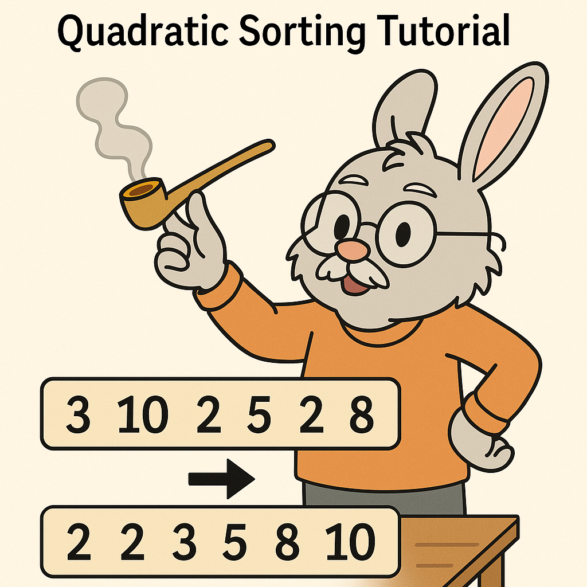

You are given sequence of integers and you need to sort them.
The first line of the input contains one integer n (1 ≤ n ≤ 500), corresponding to the amount of integers.
The second line of the input contains n integers, separated by spaces (all integers are at least 1 and at most 100'000).
Print one line with n integers, separated by a space,
corresponding to the solution of the problem (i.e. as sorted sequence).
Input
6 3 10 2 5 2 8
Output
2 2 3 5 8 10
Input
6 5 10 4 10 1 10
Output
1 4 5 10 10 10